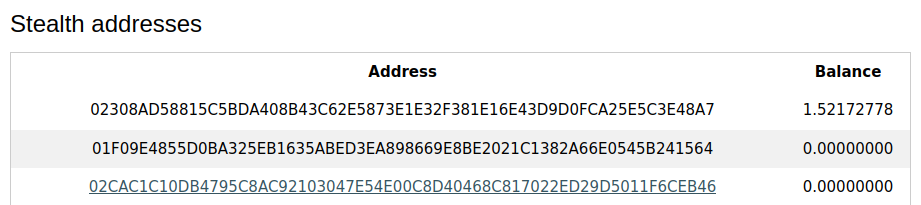

How to Claim Haircomb
1. Install Electrum or any Bitcoin wallet that allows customizable fees and fund it. At least 0.001 BTC is recommended to attempt some claims.
2: Open Haircomb Core and create your wallet.
-Wallet Tab
-Mainnet Key Generate
-Export Tab
-Name and save your wallet file. History is saved off-chain, so you'll carry your wallet file instead of copying a seed phrase. Every time you've made changes to your wallet (claims/transactions) you need to save an updated version of your wallet with a new file name. This is IMPORTANT!
3: Get your one-use stealth address.
-Wallet Tab
-Click on the key you generated
-You'll see some key info, click on the green "Stealth Addresses" button.
-You'll see a list of your stealth addresses on the right. Each is used once to attempt a claim.-Click a key from the list, the bc1 stealth address you need will be at the bottom left in the 'Stealth address' info.
4: Set up Electrum for bidding
-Open Electrum
-*Optional* Change the unit of measurement from mBTC to Sats.
-Paste the bc1 stealth address and add 330 stats (.0033 mBTC) to the amount.
-Click Pay
-In the top right, click the dropdown to allow fee editing.
5. Bid for Top Fee
***RECOMMENDED FEE: 200-300 sats/vB***
-The chart above will give you an idea of current fees, but the accuracy is low (30%). Always assume it's higher!
-Current top fee is possibly 177 sats/vB
-Input a higher fee. Ex: 200 sats/vB.
-My transaction has taken the "Top Fee" spot. This is a good sign, but it doesn't always display here.
6. Wait for results
-Once a new block is mined, you can check if you won or not.
-The chart above will refresh when a block is mined, or you can use a Block Explorer for more accurate data.
7. Check results
-Open Haircomb Core
-Ensure your wallet is imported.
-Coins Tab
-Click "Load Claims" and wait for it to finish loading. -Wallet Tab
-Wallet Tab
-In Key Info, click the blue "Claimed stack check" button
-Your stealth addresses will be updated.
-This image shows I succeeded once to claim 1.52 comb and I failed a separate time.
8. Move the claimed comb to your wallet.
-Press the "Sweep Stealth Addresses" button.
-Your key should be updated with your new balance.
-Be sure to save/export your new wallet balance.
-Congrats, you claimed Haircomb!